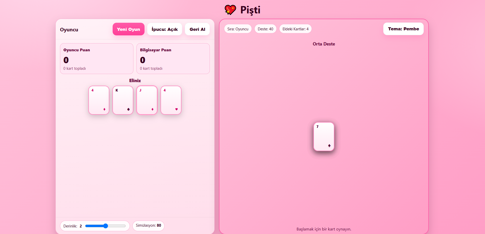

Pişti (Türk Kart Oyunu) – Pembe Temalı Rehber
Bu sayfa, Othello (Reversi) için hazırlanmış ders notlarının yapısını Pişti oyununa uyarlayarak sunar: tür, uygunluk, temel konular; ardından tanım, kurallar, strateji, tarihçe, algoritmik oyun kuramı eşlemesi, heuristik ve yapay zekâ yaklaşımları.
Özet
- Tür: Kart oyunu, 52'lik deste, tur bazlı
- Neden uygun?
- Basit kurallar + pişti ve özel kart puanlarıyla ilginç olasılık hesabı.
- Heuristik tabanlı arama ve Monte Carlo simülasyonlarıyla güçlü botlar yapılabilir.
- Konular:
- Oyun ağacı/hamle simülasyonu (tam bilgi değil, kısmi bilgi)
- Alpha–beta (sınırlı derinlikte) veya MCTS
- Tahmin (değerlendirme) fonksiyonları ve puan heuristikleri
1. Oyunun Tanımı
Pişti, iki (veya dörtlü eşli) oyuncuyla, 52 kartlık standart bir desteyle oynanan, yerdeki kartları toplama temelli bir oyundur. Amaç, el sonunda toplanan kartlardan ve pişti durumlarından en yüksek puanı elde etmektir.
2. Deste, Dağıtım ve Başlangıç
- Deste: Joker yoktur. As–Papaz–Kız–Vale–10–…–2.
- Dağıtım: Her oyuncuya 4'er kart; ortaya desteden 3 kapalı + 1 açık kart bırakılır.
- Oyun sırası: Genelde dağıtanın sağı başlar; herkes elindeki 4 kart bitince yeniden 4'er kart dağıtılır; deste bittiğinde tur kapanır.
3. Kurallar ve Oynanış
- Oyuncular sırayla elinden bir kart atar.
- Atılan kartın rütbesi yerdeki en üst kartla eşleşirse, yerdeki tüm kartlar alınır.
- Vale (J) jokerimsi davranır: Yerde en az bir kart varsa tek başına ortayı alır.
- Yerde tek kart varken eşleşmeyle ya da J ile almak pişti sayılır ve ekstra puan getirir.
- Kimse alamazsa kart, yerin üstüne kalır (yığın büyür).
- Deste bitince yerde kalan son yığın, son alan tarafa verilir ve puanlar hesaplanır.
4. Stratejik Özellikler
- Pişti fırsatları kritiktir: Yerde tek kart bırakmak risklidir; rakibin eşleşmesi ya da J'i olup olmadığını olasılıksal düşün.
- Değerli kartları koru: ♦10 (+3) ve ♣2 (+2) gibi puan kartlarını gereksizce ortaya atma.
- Bilgi takibi: Çıkan As/J sayısını ve görünen rütbeleri hatırla; bu, risk ve beklenti hesabını iyileştirir.
- Son yığın: El sonunda son ortayı almak çoğu varyantta +3 getirir; planına dahil et.
- Tempo: Rakibi boşaltmaya zorlamak için değersiz kart bırakıp değerliyi saklamak işe yarar.
5. Kısa Tarihçe
Pişti, Türkiye'de yaygın bir kahvehane oyunudur. Kökeni Basra gibi toplama temelli oyunlarla akrabadır; farklı bölgelerde puanlama küçük değişiklikler gösterir (ör. son yığın/fazla kart bonusu).
6. Pişti ve Algoritmik Oyun Kuramı (AGT) Eşlemesi
| Oyun tipi | İki kişilik, kısmi bilgi, stohastik unsur (kart sırası), sıfır toplamlı |
|---|---|
| Strateji | Hangi kartın ne zaman atılacağı; kart sayma / olasılık modeli |
| Oyun ağacı | Her tur eldeki kart sayısına göre dallanır; belirsiz kartlar için örnekleme gerekir |
| Arama | Minimax (sınırlı derinlik) + Alpha–Beta; pratikte MCTS ve Monte Carlo simülasyonları |
| Heuristik | Pişti/vale fırsat değeri, bırakılan kartın riski, özel kartların korunması, son yığın olasılığı |
7. Heuristik (Durum Değerlendirme) Örneği
Bir konumu aşağıdaki ağırlıklı toplamla değerlendirebilirsiniz:
Değer ≈ (AnlıkKazanç) + (PiştiFırsatı × 6) + (SonYığınOlasılığı × 3)
− (VerilenDeğerliKart × 4) − (RakipYakalamaRiski × 2)
- AnlıkKazanç: Bu turda toplanacak puan (A/J/♦10/♣2 + yerdeki kart sayısı).
- VerilenDeğerliKart: ♦10, ♣2, As, J gibi kartları boşa bırakmanın bedeli.
- RakipYakalamaRiski: Rakibin eşleşme veya J ile alma ihtimali.
8. Bilgisayara Karşı Pişti ve Yapay Zekâ
- Basit bot: Alabiliyorsa al; J ile uygun zamanda al; değilse en az değerli kartı bırak.
- Arama tabanlı: Örneklenmiş gizli kartlarla birkaç hamle ileri minimax/alpha–beta.
- MCTS/Monte Carlo: Kalan kartları rastgele tamamlayıp çok sayıda simülasyon çalıştırmak pratikte güçlüdür.
- Öğrenme tabanlı: Simülasyonlardan elde edilen sonuçlarla heuristik ağırlıkları optimize etmek.
9. Eğitsel Önemi
- Kısmi bilgi ve olasılık modellemesi (gizli kartlar).
- Arama ve kesme tekniklerinin pratik sınırlamaları (bilgi eksikliği).
- Heuristik tasarımı ve risk–ödül dengesi.
- Monte Carlo simülasyonlarının oyunlara uygulanması.
Püf Noktalar
- Piştiyi zorla: Yerde tek kart bırakacağın zaman rakibin eşleşme olasılığını düşün; gerekirse güvenli kartla boşalt.
- J zamanlaması: 20 puanlık J ile pişti fırsatı nadirdir; erken harcama.
- Kayıp kontrolü: Değerli kartı bırakacaksan, rakibin alamayacağı turu seç.
- Son yığın planı: El sonuna yaklaşırken son ortayı alacak akışı kur.